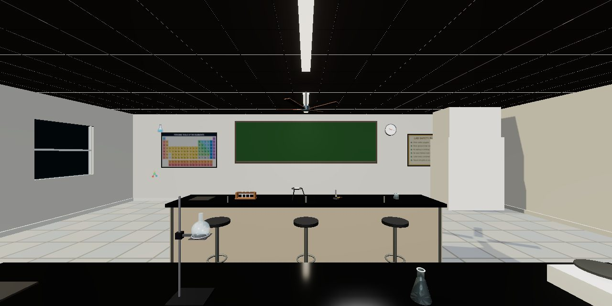
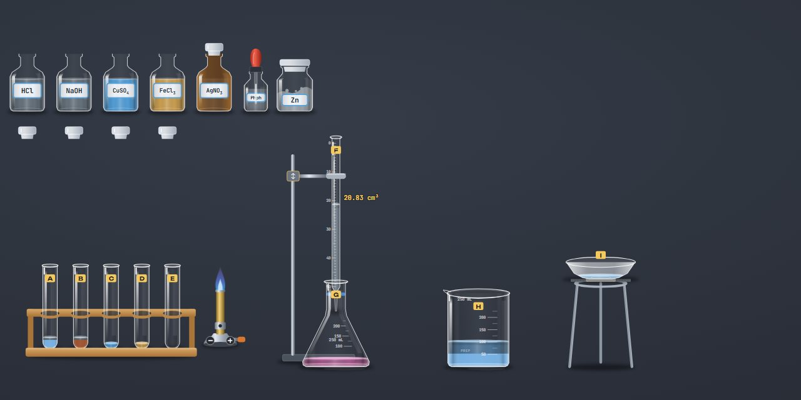

Chemistry Lab
Mix solutions, observe reactions and titrations with 3D glassware on a real bench.
Explore lab
Chemistry Bench
An open bench and a drawer of glassware and chemicals: set up your own experiment, pour, heat and test, and a notebook writes down what you see.
Open the bench